EXHIBIT A · RECOVERED VESSEL
A boat. Adrift in the dark.
EXHIBIT A · RECOVERED 06:12 AM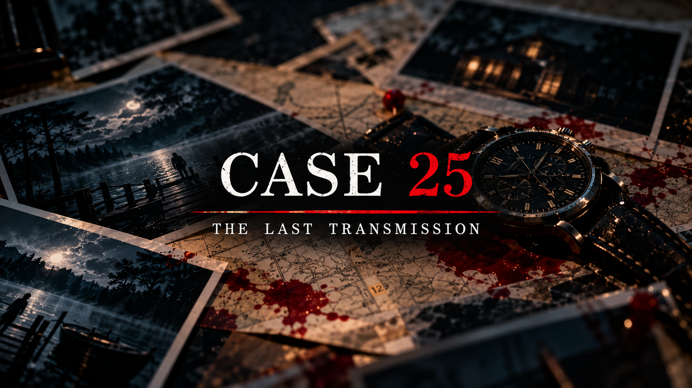
AN UNRESOLVED DISAPPEARANCE
THE LAST TRANSMISSION
THE RECORD ENDS WHERE THE WATER BEGINS
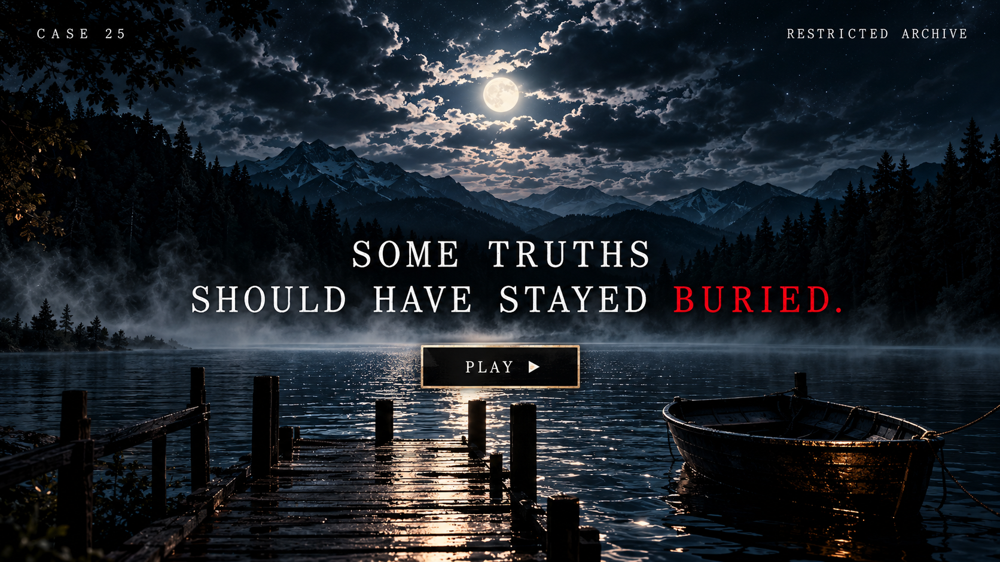
LAKE ASH · OCTOBER 14 · 11:47 PM
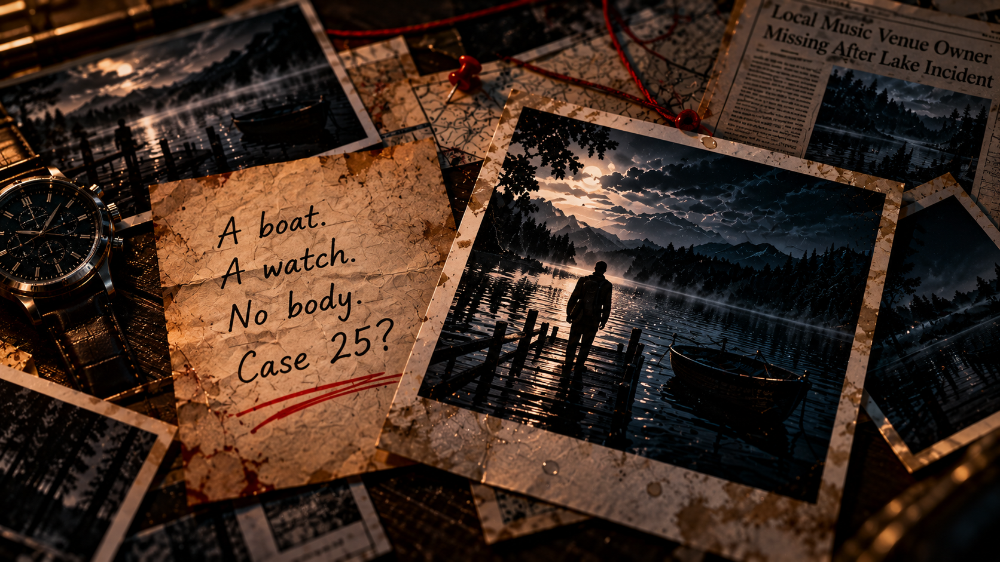
A boat. Adrift in the dark.
EXHIBIT A · RECOVERED 06:12 AMA watch. Stopped at 11:47.
THE HANDS NEVER MOVED AGAINOwner, The Mariner
Last seen: Lake Ash
Status: Presumed deceased
No body. No answers.
SEARCH SUSPENDED · 10.21.1999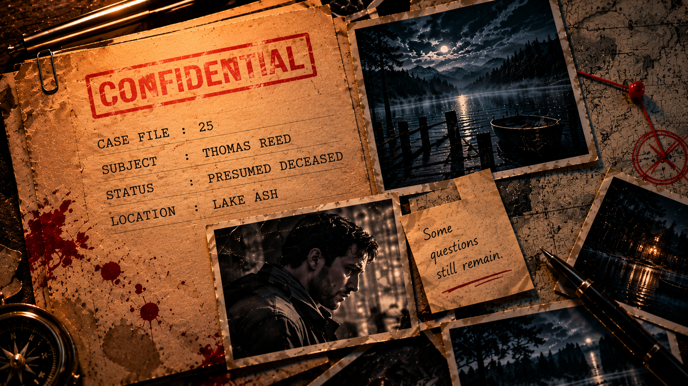
MISSING PERSON · LAKE ASH
THE FILE WAS CLOSED.
THE QUESTIONS WEREN’T.
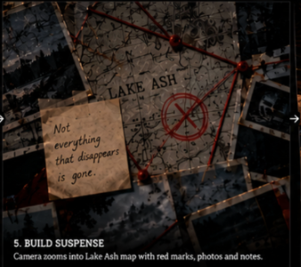
THE OFFICIAL STORY ENDS HERE
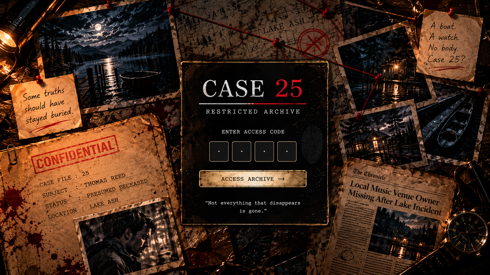
SUBJECT: THOMAS REED
LOCATION: LAKE ASH
STATUS: PRESUMED FATAL
RESTRICTED ARCHIVE
“Not everything that disappears is gone.”
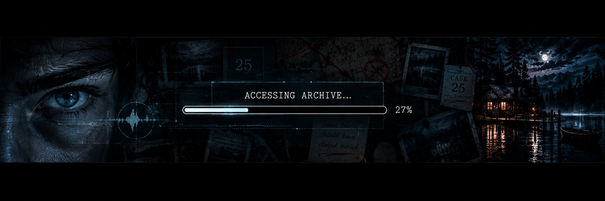
DECRYPTING ARCHIVE 00%
VERIFYING ACCESS CREDENTIALSCASE 25 · ACCESS GRANTED
DAY ONE HAS NOT YET BEEN RELEASED.TRANSMISSION 001
If you're reading this, the disappearance has already been accepted as a death.
That conclusion may be premature.
Three people know more than they have admitted.
Begin with the last person who claims to have seen Thomas Reed.
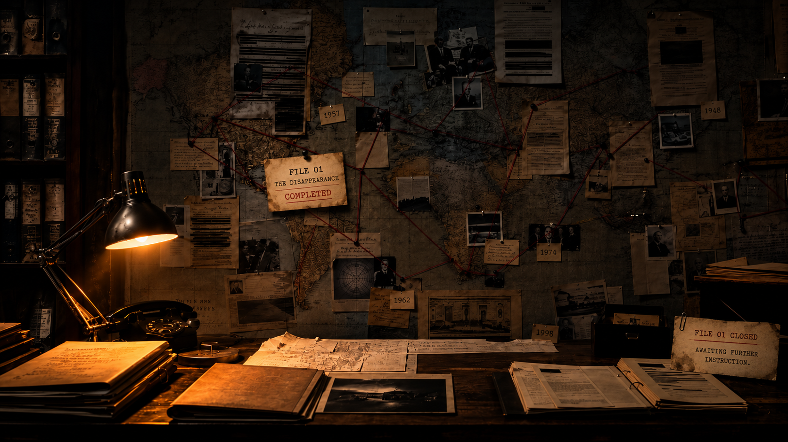
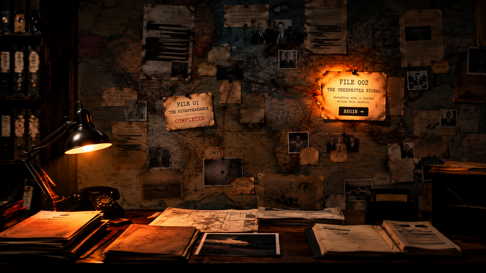
CHAPTER 02 FILE 02 — THE FINANCIAL RECORDS
A trail of numbers, missing entries, and unanswered questions.
The Lantern was more than just a music venue.
It was also a business — and businesses leave trails.
But the numbers don't tell a simple story.
Examine the financial records of The Lantern, identify irregularities, and trace where the money went.
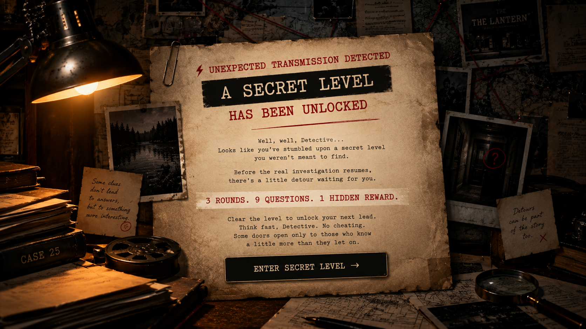
⚡ UNEXPECTED TRANSMISSION DETECTED
Well, well, Detective…
Looks like you've stumbled upon a secret level you weren't meant to find.
Before the real investigation resumes, there's a little detour waiting for you.
Clear the level to unlock your next lead.
Think fast, Detective. No cheating. Some doors open only to those who know a little more than they let on.
CASE 25 / RESTRICTED ARCHIVE
0 / 9 QUESTIONS
XP RECOVERED 0 XP
SECRET LEVEL · ROUND I
Different worlds. Same game.
The first set of trials comes from a world of shinobi, secrets, and sacrifice.
Three questions. Test your knowledge, your logic, and your instincts.
SECRET LEVEL · ROUND II
Some secrets survive their witnesses.
Some debts outlive the people who owe them.
And some things refuse to stay buried.
The past has a longer memory than anyone expects.
CASE 25 · SECRET LEVEL
Every boundary protects something.
Every wall hides something.
And every secret leaves a trace.
Follow the evidence. Question the obvious.
Find what lies beyond.
ROUND I · INVESTIGATION RECORD
THREE FILES EXAMINED. THREE CONCLUSIONS VERIFIED.
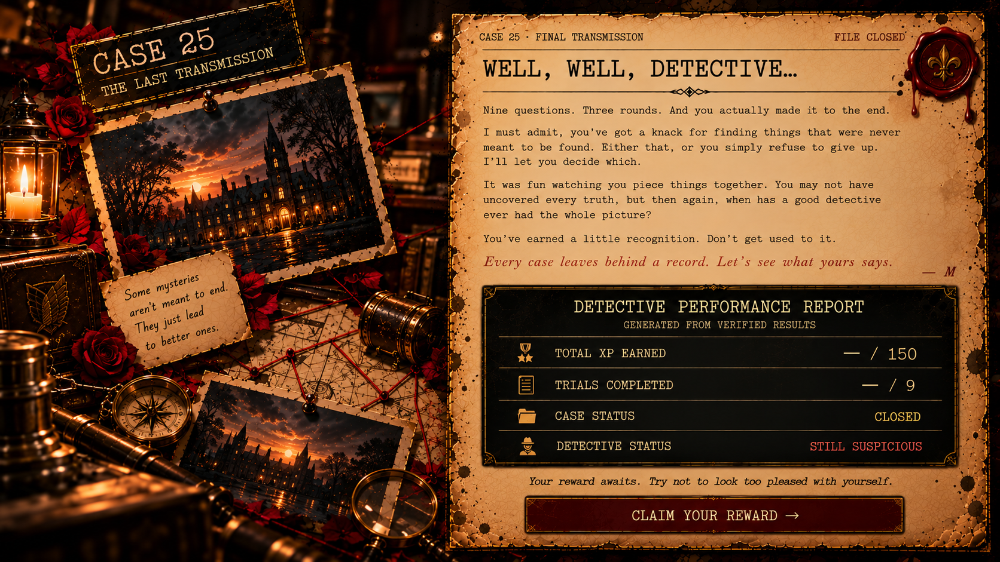
CLASSIFICATION: TOP SECRET
THREAT LEVEL: UNREASONABLY TEMPTING
Detective,
Our surveillance team has intercepted
a suspicious little package.
Its contents have been linked to:
The suspect is small, heavily guarded,
and notoriously difficult to resist.
We advise against interrogation.
Some things are better left unshared.
Your first lead is waiting.
P.S. If the evidence mysteriously
vanishes, this message never existed.
THE DISAPPEARANCE OF THOMAS REED